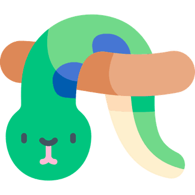

Ormritaren
Skriv og køyr ekte Python rett i nettlesaren. Ingen innlogging, ingen installasjon — og koden din blir verande på di eiga maskin.
Denne sida køyrer utan delt minne, så input() vil ikkje verke her.
Alt anna fungerer som normalt. (På ein lokal tenar er dette venta — sjå serve_ormritaren.ps1.)
Filene ligg lagra i nettlesaren din — ikkje på nokon tenar. Tømmer du nettlesardata, forsvinn dei. Last ned det du vil ta vare på.
Programmet har køyrt ei stund. Er det ei løkke som aldri sluttar? Trykk Stopp — koden din blir verande.
Bibliotek du kan bruke
Du treng ikkje installere noko. Skriv import numpy i koden,
så blir biblioteket henta automatisk — frå vår eigen tenar, ikkje frå nettet.
Fyrste gongen tek det nokre sekund; etterpå ligg det i nettlesaren.
Python køyrer som WebAssembly i din eigen nettlesar gjennom Pyodide. Koden du skriv blir aldri send nokon stad. Sjå personvernerklæringa for detaljar.